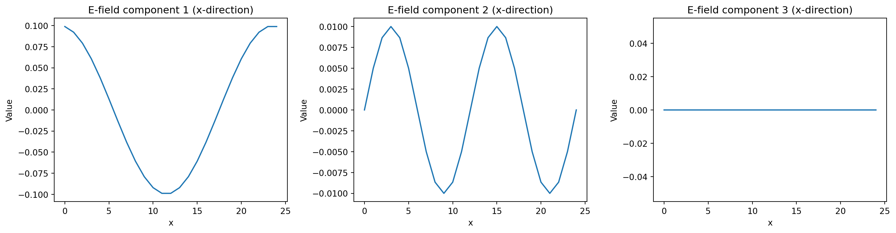
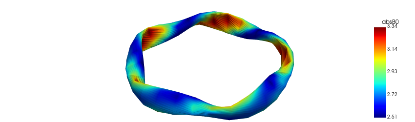

['ColdPlasma',
'ColdPlasmaVlasov',
'DeterministicParticleDiffusion',
'DriftKineticElectrostaticAdiabatic',
'GuidingCenter',
'HasegawaWakatani',
'LinearExtendedMHDuniform',
'LinearMHD',
'LinearMHDDriftkineticCC',
'LinearMHDVlasovCC',
'LinearMHDVlasovPC',
'LinearVlasovAmpereOneSpecies',
'LinearVlasovMaxwellOneSpecies',
'Maxwell',
'Poisson',
'PressureLessSPH',
'RandomParticleDiffusion',
'ShearAlfven',
'TwoFluidQuasiNeutralToy',
'VariationalBarotropicFluid',
'VariationalCompressibleFluid',
'VariationalPressurelessFluid',
'ViscoResistiveDeltafMHD',
'ViscoResistiveDeltafMHD_with_q',
'ViscoResistiveLinearMHD',
'ViscoResistiveLinearMHD_with_q',
'ViscoResistiveMHD',
'ViscoResistiveMHD_with_p',
'ViscoResistiveMHD_with_q',
'ViscousEulerSPH',
'ViscousFluid',
'Vlasov',
'VlasovAmpereOneSpecies',
'VlasovMaxwellOneSpecies']Struphy 3.0
Structure-Preserving
Hybrid Code
HPC Plasma Modeling with Python
Stefan Possannera, Max Lindqvista, Byung-Kyu Na, Dominik Bell, Valentin Carlier, Florian Holderied
aMax Planck Institute for Plasma Physics, Garching, Germany
Struphy is …
… an open-source Python package for solving partial differential equations (PDEs), primarily designed for plasma physics — though not limited to it.
- 💯% Python — Write models in clean, readable Python.
- 💥 Pyccel-powered kernels — High-performance Fortran code generated via Pyccel.
- 💻 Simple API — Run complex plasma simulations with minimal boilerplate.
- 🌐 Open-source & community-driven — Built for collaboration and accessibility.
Numerical methods
Particle-in-cell (PIC) method for kinetic models:
\[ f(t, x, v) = \sum_k w_k\, \delta(x - x_k(t))\, \delta(v - v_k(t)) \]
Finite element exterior calculus (FEEC) for fluid/field variables:
\[ \mathbf E(t, x) = \sum_i e_i(t)\, \mathbf \Lambda^1_i(x)\,, \qquad \mathbf B(t, x) = \sum_i b_i(t)\, \mathbf \Lambda^2_i(x) \]
Smoothed Particle Hydrodynamics (SPH) for fluid models:
\[ n(t, x) = \sum_k w_k\, W(x - x_k(t))\,,\qquad \mathbf u(t, x) = \sum_k \frac{w_k}{n(t, x_k(t))}\, \mathbf v_k(t)\, W(x - x_k(t)) \]
Getting the code
Installation Options
- Install on bare metal (Linux/macOS)
- From PyPI (recommended)
- From source (for development)
- Use Docker (cross-platform)
- Run tutorials on Binder (cloud-based)
Install on bare metal (Linux/macOS)
- From source (for development):
Use Docker (cross-platform)
- Pull the latest image from Docker Hub and run it:
Run tutorials on Binder (cloud-based)
🌐 Tutorials: github.com/struphy-hub/struphy-tutorials


We will run through the first few tutorials together, but feel free to explore the rest on your own time!
Getting started
Models (PDEs)
Model Info
Maxwell's equations in vacuum for electromagnetic field evolution.
This model simulates the propagation of electromagnetic waves in vacuum using Maxwell's equations without sources. It uses a finite element exterior calculus (FEEC) formulation with the electric field in H(curl) and the magnetic field in H(div) spaces.
Governing Equations
Ampère's law (no current):
∂𝐄∂t - ∇×𝐁 = 0
Faraday's law:
∂𝐁∂t + ∇×𝐄 = 0
Normalization
Fields are normalized such that:
Ê = c B̂
where c is the speed of light.
Species
em_fields.e_field- Electric field (H(curl) space)em_fields.b_field- Magnetic field (H(div) space)
Propagators
struphy.propagators.propagators_fields.Maxwell- Time integration scheme
Scalar Quantities
The following quantities are tracked during simulation:
- Electric energy:
EE = ½ ∫ |𝐄|² dV - Magnetic energy:
EB = ½ ∫ |𝐁|² dV - Total energy:
Eₜₒₜₐₗ = EE + EB
Model Properties
- Model type: Toy
- Velocity scale: Speed of light
- Bulk species: None
See Also
struphy.models.base.StruphyModel- Base class for all Struphy modelsstruphy.propagators.propagators_fields.Maxwell- Maxwell propagator implementation
Examples
Create and initialize a Maxwell model:
from struphy.models.maxwell import Maxwell
model = Maxwell()
# Fields are accessible via:
# model.em_fields.e_field
# model.em_fields.b_fieldCreate a Simulation
Run
Starting simulation run for model Maxwell ...
PROPAGATOR OPTIONS:
Options for propagator 'Maxwell':
algo: implicit
solver: pcg
precond: MassMatrixPreconditioner
solver_params: SolverParameters(tol=1e-08, maxiter=3000, info=False, verbose=False, recycle=True)
butcher: None
INITIAL CONDITIONS:
Variable 'e_field' of species 'EMFields' - no background.
Variable 'e_field' of species 'EMFields' - no perturbation.
Variable 'b_field' of species 'EMFields' - no background.
Variable 'b_field' of species 'EMFields' - no perturbation.
Allocating simulation data ...
WARNING: Class "BasisProjectionOperators" called with p=(1, 1, 1) (interpolation of piece-wise constants should be avoided).
Rank 0: executing run() for model Maxwell ...
INITIAL SCALAR QUANTITIES:
electric energy: 0.00e+00
magnetic energy: 0.00e+00
total energy: 0.00e+00
START TIME STEPPING WITH 'LieTrotter' SPLITTING:
Time steps done: 3
wall-clock time of simulation [sec]: 0.371448278427124
Struphy run finished.Run Simulation verbosely
Starting simulation run for model Maxwell ...
Removed existing file /home/IPP-AD/spossann/git_repos/2026_SIAM_Berlin/sim_1/data/data_proc0.hdf5
PROPAGATOR OPTIONS:
Options for propagator 'Maxwell':
algo: implicit
solver: pcg
precond: MassMatrixPreconditioner
solver_params: SolverParameters(tol=1e-08, maxiter=3000, info=False, verbose=False, recycle=True)
butcher: None
INITIAL CONDITIONS:
Variable 'e_field' of species 'EMFields' - no background.
Variable 'e_field' of species 'EMFields' - no perturbation.
Variable 'b_field' of species 'EMFields' - no background.
Variable 'b_field' of species 'EMFields' - no perturbation.
Allocating simulation data ...
DERHAM:
number of elements: (24, 10, 1)
spline degrees: (1, 1, 1)
periodic bcs: (True, True, True)
hom. Dirichlet bc: ((False, False), (False, False), (False, False))
GL quad pts (L2): None
GL quad pts (hist): None
MPI proc. per dir.: [1, 1, 1]
use polar splines: False
domain on process 0: [ 0. 1. 24. 0. 1. 10. 0. 1. 1.]
WARNING: Class "BasisProjectionOperators" called with p=(1, 1, 1) (interpolation of piece-wise constants should be avoided).
Allocated SplineFuntion 'e_field' in space 'Hcurl'.
Allocated SplineFuntion 'b_field' in space 'Hdiv'.
Assembling matrix of WeightedMassOperator "M1" with V=Hcurl, W=Hcurl.
Assemble block (0, 0)
Assemble block (1, 1)
Assemble block (2, 2)
Done.
Assembling matrix of WeightedMassOperator "M2" with V=Hdiv, W=Hdiv.
Assemble block (0, 0)
Assemble block (1, 1)
Assemble block (2, 2)
Done.
Allocated propagator 'Maxwell'.
... Done.
PLASMA PARAMETERS:
Plasma volume: 1.000e+00 m³
Transit length: 1.000e+00 m
Avg. magnetic field: nan T
Max magnetic field: 0.000e+00 T
Min magnetic field: 0.000e+00 T
Rank 0: executing run() for model Maxwell ...
INITIAL SCALAR QUANTITIES:
electric energy: 0.00e+00
magnetic energy: 0.00e+00
total energy: 0.00e+00
START TIME STEPPING WITH 'LieTrotter' SPLITTING:
time step: 1/3
normalized time: 1.00e-02 / 3.00e-02
physical time [s]: 3.34e-11 / 1.00e-10
wall clock time [s]: 0.5923
last step duration [s]: 0.0091
electric energy: 0.00e+00
magnetic energy: 0.00e+00
total energy: 0.00e+00
time step: 2/3
normalized time: 2.00e-02 / 3.00e-02
physical time [s]: 6.67e-11 / 1.00e-10
wall clock time [s]: 0.6056
last step duration [s]: 0.0066
electric energy: 0.00e+00
magnetic energy: 0.00e+00
total energy: 0.00e+00
time step: 3/3
normalized time: 3.00e-02 / 3.00e-02
physical time [s]: 1.00e-10 / 1.00e-10
wall clock time [s]: 0.6179
last step duration [s]: 0.0065
electric energy: 0.00e+00
magnetic energy: 0.00e+00
total energy: 0.00e+00
Time steps done: 3
wall-clock time of simulation [sec]: 0.627432107925415
Struphy run finished.Set initial conditions
Run and post process
Post-processing path /home/IPP-AD/spossann/git_repos/2026_SIAM_Berlin/sim_1
Reading hdf5 data of following species:
em_fields:
b_field: <HDF5 group "/feec/em_fields/b_field" (3 members)>
e_field: <HDF5 group "/feec/em_fields/e_field" (3 members)>
Creation of Struphy Fields done.
Evaluating fields ...
Creating vtk in /home/IPP-AD/spossann/git_repos/2026_SIAM_Berlin/sim_1/post_processing/fields_data ...
No kinetic data found in hdf5 file, skipping post-processing of kinetic data.Load plotting data
Loading post-processed plotting data:
Data path: /home/IPP-AD/spossann/git_repos/2026_SIAM_Berlin/sim_1/post_processing
Files in /home/IPP-AD/spossann/git_repos/2026_SIAM_Berlin/sim_1/post_processing/fields_data/em_fields: ['e_field_log.bin', 'b_field_log.bin']
The following data has been loaded:
grids:
self.t_grid.shape =(4,)
self.grids_log[0].shape =(25,)
self.grids_log[1].shape =(11,)
self.grids_log[2].shape =(2,)
self.grids_phy[0].shape =(25, 11, 2)
self.grids_phy[1].shape =(25, 11, 2)
self.grids_phy[2].shape =(25, 11, 2)
self.spline_values:
em_fields
e_field_log
b_field_log
self.orbits:
self.f:
self.n_sph:
Inspect data types
type(self.data) = <class 'dict'>
len(self.data) = 4
key = np.float64(0.0) shape = [(25, 11, 2), (25, 11, 2), (25, 11, 2)]
key = np.float64(0.01) shape = [(25, 11, 2), (25, 11, 2), (25, 11, 2)]
key = np.float64(0.02) shape = [(25, 11, 2), (25, 11, 2), (25, 11, 2)]
key = np.float64(0.03) shape = [(25, 11, 2), (25, 11, 2), (25, 11, 2)]Plot initial conditions
e_init = e_field.data[0.0]
print(f"{e_init[1].shape = }")
from matplotlib import pyplot as plt
fig, axes = plt.subplots(1, 3, figsize=(15, 4))
# Plot 1: First component in x-direction
axes[0].plot(e_init[0][:, 0, 0])
axes[0].set_title("E-field component 1 (x-direction)")
axes[0].set_xlabel("x")
axes[0].set_ylabel("Value")
# Plot 2: Add your second plot
axes[1].plot(e_init[1][:, 0, 0])
axes[1].set_title("E-field component 2 (x-direction)")
axes[1].set_xlabel("x")
axes[1].set_ylabel("Value")
# Plot 3: Add your third plot
axes[2].plot(e_init[2][:, 0, 0])
axes[2].set_title("E-field component 3 (x-direction)")
axes[2].set_xlabel("x")
axes[2].set_ylabel("Value")
plt.tight_layout()e_init[1].shape = (25, 11, 2)
Launch files - the API
Default launch files from CLI
This will create a file params_MODEL.py in the current working directory.
To run the model type
For parallel runs, use
or copy the command to a job script for your cluster’s scheduler (e.g., SLURM, PBS).
Launch file API
Example: LinearMHD
Linear ideal MHD with zero-flow equilibrium for magnetohydrodynamic wave propagation.
This model simulates small-amplitude perturbations in a magnetized plasma with a static
equilibrium magnetic field 𝐁₀ and zero background flow. The model solves the linearized
ideal magnetohydrodynamic (MHD) equations, which couple fluid dynamics (density, velocity, pressure)
with magnetic field evolution. The system supports both Alfvén waves (incompressible shear) and
magnetosonic waves (compressible fast and slow modes).
Governing Equations
Continuity (mass conservation):
∂ρ̃∂t + ∇ · (ρ₀ Ũ) = 0
Momentum (Lorentz force):
ρ₀ ∂Ũ∂t + ∇ p̃ = (∇ × B̃) × 𝐁₀ + (∇ × 𝐁₀) × B̃
Energy (adiabatic process):
∂p̃∂t + ∇ · (p₀ Ũ) + 23 p₀ ∇ · Ũ = 0
Induction (Faraday's law):
∂B̃∂t - ∇ × (Ũ × 𝐁₀) = 0
Normalization
All velocities are normalized by the Alfvén velocity:
Û = v̂A = B̂₀√(μ₀ ρ₀)
Perturbation Variables
All quantities in the equations represent perturbations around equilibrium:
ρ̃- Density perturbationŨ- Velocity perturbationp̃- Pressure perturbationB̃- Magnetic field perturbation
Equilibrium quantities (with subscript 0) are stationary:
ρ₀- Static background densityp₀- Static background pressure𝐁₀- Static background magnetic field
Species
em_fields.b_field- Magnetic field perturbation (H(div) space)mhd.density- Density perturbation (L² space)mhd.velocity- Velocity perturbation (H(div) space)mhd.pressure- Pressure perturbation (L² space)
Wave Modes
The linear MHD system supports three wave types:
- Alfvén waves: Incompressible shear waves propagating along
𝐁₀with velocityvA - Fast magnetosonic wave: Compressible wave with phase velocity
vfast > vA - Slow magnetosonic wave: Compressible wave with phase velocity
vslow < vA
Propagators
Time integration is performed by the following propagators (in sequence):
struphy.propagators.propagators_fields.ShearAlfven- Evolves Alfvén waves (velocity and magnetic field coupling)
struphy.propagators.propagators_fields.Magnetosonic- Evolves compressible modes (density, velocity, pressure)
Scalar Quantities
The following energies are tracked during simulation:
- Kinetic energy (perturbation):
EU = ½ ∫ ρ₀ |Ũ|² dV - Magnetic energy (perturbation):
EB = ½ ∫ |B̃|²⁄μ₀ dV - Internal energy (perturbation):
Eₚ = ∫ p̃⁄γ - 1 dV(γ = 5/3) - Total perturbed energy:
Eₜₒₜ = EU + EB + Eₚ - Equilibrium magnetic energy:
EB0 = ½ ∫ |𝐁₀|²⁄μ₀ dV - Equilibrium internal energy:
Eₚ₀ = ∫ p₀⁄γ - 1 dV - Total magnetic energy:
EB,tot = ½ ∫ |𝐁₀ + B̃|²⁄μ₀ dV
Model Properties
- Model type: Fluid
- Velocity scale: Alfvén velocity
- Bulk species: mhd
- Assumptions: Zero-flow equilibrium, linear perturbations, ideal MHD
Key Assumptions
- Perturbations are small (linear theory valid)
- Equilibrium is static:
𝐔₀ = 0 - Ideal MHD: infinite conductivity, no dissipation
- Adiabatic process: polytropic index
γ = 5/3
See Also
struphy.models.base.StruphyModel- Base class for all Struphy modelsstruphy.propagators.propagators_fields.ShearAlfven- Alfvén wave propagatorstruphy.propagators.propagators_fields.Magnetosonic- Magnetosonic wave propagator
References
- Boyd, T. J. M., & Sanderson, J. J. (2003). The physics of plasmas. Cambridge University Press.
- Goedbloed, J. P., Keppens, R., & Poedts, S. (2019). Magnetohydrodynamics of laboratory and astrophysical plasmas. Cambridge University Press.
Examples
Create and initialize a linear MHD model:
from struphy.models.linear_mhd import LinearMHD
model = LinearMHD()
# Access fields
# model.em_fields.b_field - Magnetic field perturbation
# model.mhd.density - Density perturbation
# model.mhd.velocity - Velocity perturbation
# model.mhd.pressure - Pressure perturbation
# Track energies during simulation
# model.scalar_quantities["en_U"] - Kinetic energy
# model.scalar_quantities["en_B"] - Magnetic energy
# model.scalar_quantities["en_p"] - Internal energyExample: LinearMHD (ctd.)

Line Highlighting
- Highlight specific lines for emphasis
- Incrementally highlight additional lines
Executable Code

LaTeX Equations
MathJax rendering of equations to HTML
\[\begin{gather*}
a_1=b_1+c_1\\
a_2=b_2+c_2-d_2+e_2
\end{gather*}\]
\[\begin{align}
a_{11}& =b_{11}&
a_{12}& =b_{12}\\
a_{21}& =b_{21}&
a_{22}& =b_{22}+c_{22}
\end{align}\]
Column Layout
Arrange content into columns of varying widths:
Incremental Lists
Lists can optionally be displayed incrementally:
- First item
- Second item
- Third item

HPC Plasma Modeling with Python